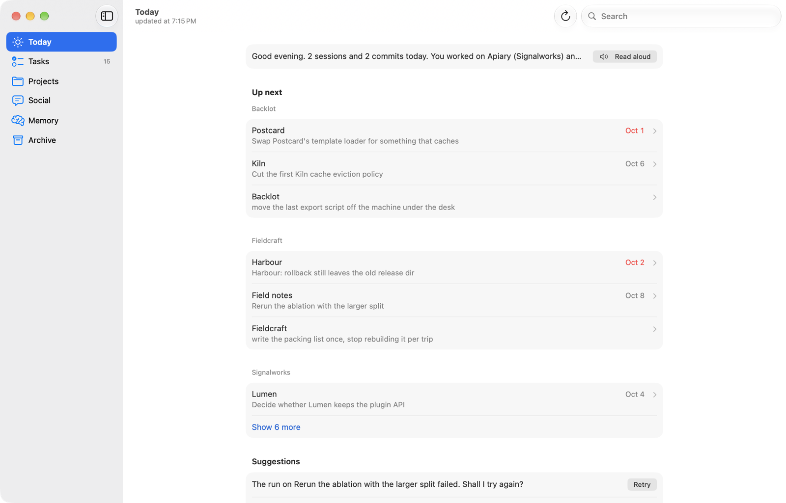
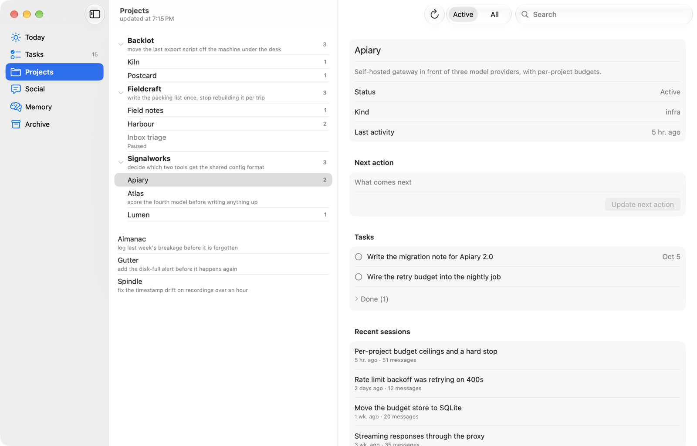
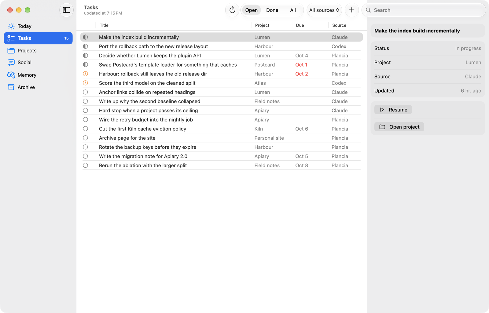
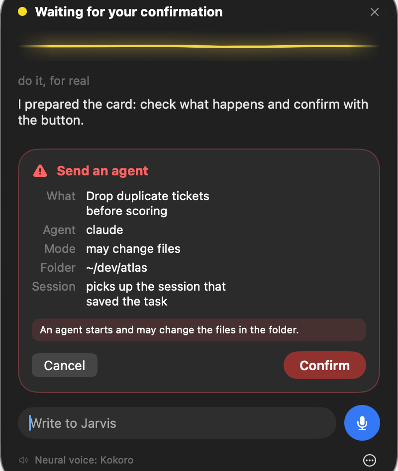
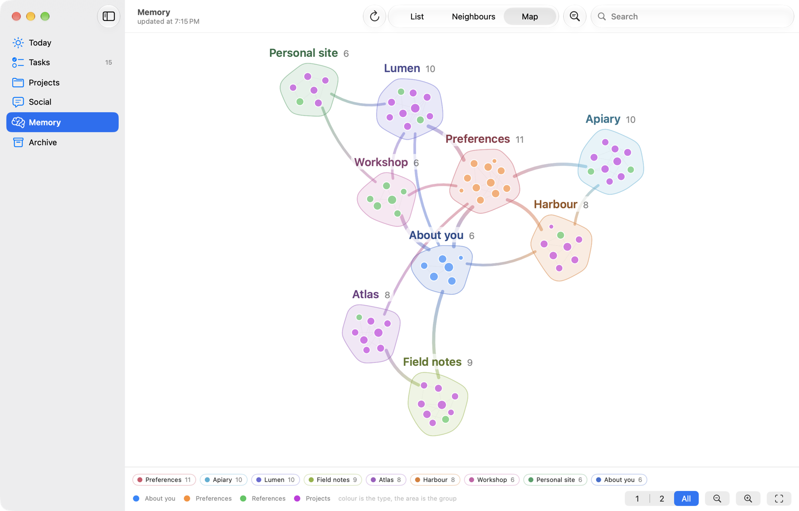
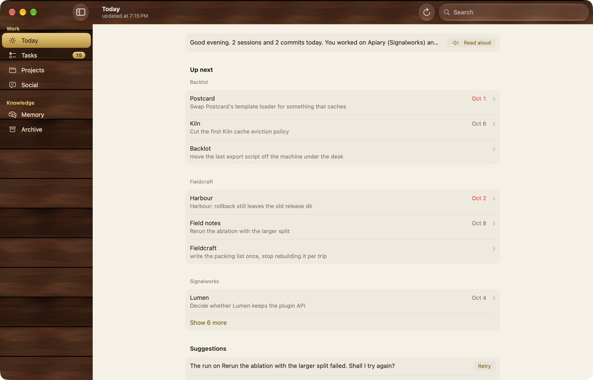
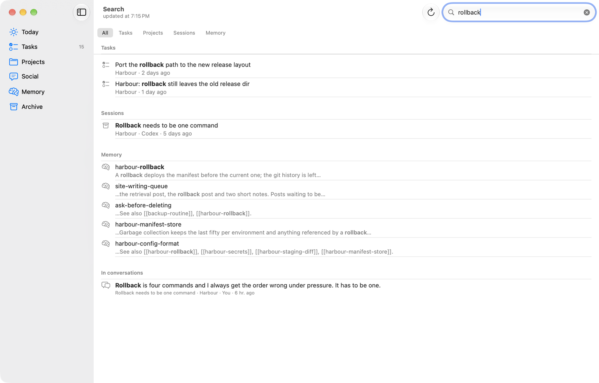
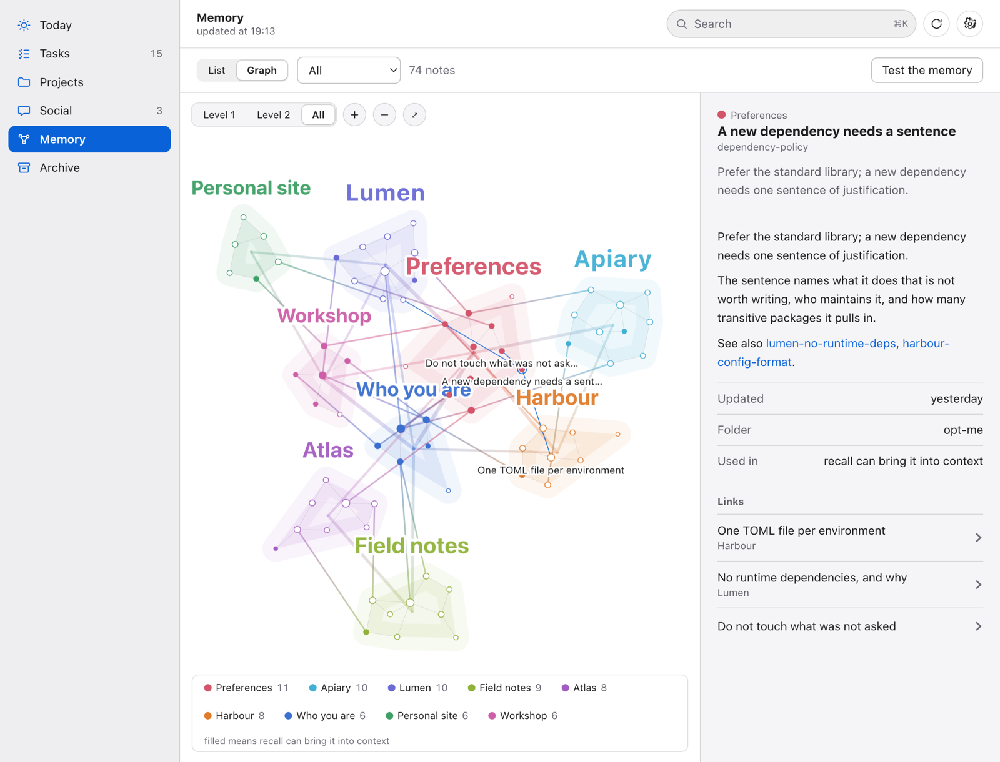

Two agents, four terminals,
one row each.
Due agenti, quattro terminali,
una riga ciascuno.
Claude Code and Codex already write down everything they do, transcripts and task lists and goals and memory, in files on your disk. Nothing reads them together. Plancia does, and it ends with a decision.
Claude Code e Codex si scrivono già tutto, transcript e liste di task e obiettivi e memoria, in file sul tuo disco. Solo che non li legge nessuno insieme. Plancia sì, e finisce con una decisione.
- One row per project tells you what to do.
- Una riga per progetto ti dice cosa fare.
- Resume reopens the conversation that wrote the task.
- Riprendi riapre la conversazione che ha scritto il task.
- The rest stays folded, one click away.
- Il resto sta ripiegato, a un clic di distanza.
Python 3 and macOS 13+. No dependencies to install, no account, no server.
The whole archive is one file: ~/.plancia/plancia.db.
Python 3 e macOS 13+. Nessuna dipendenza da installare, nessun account,
nessun server. L'archivio è un file solo: ~/.plancia/plancia.db.
The native app needs macOS 26: SwiftUI with the system controls and Liquid Glass, and every view shows its last state at once while it refreshes, never a blank screen. On Windows, Linux and older Macs you get the same views in the browser. L'app nativa chiede macOS 26: SwiftUI con i controlli di sistema e il Liquid Glass, e ogni vista mostra subito l'ultimo stato mentre si aggiorna, mai una schermata vuota. Su Windows, Linux e Mac più vecchi le stesse viste stanno nel browser.
bytes of telemetry, ever
byte di telemetria, mai
agents read: Claude Code and Codex
agenti letti: Claude Code e Codex
file holds everything, in plain SQLite
file tiene tutto, in SQLite leggibile
tools your agents can call back into it
strumenti con cui gli agenti ci rientrano

The work is there. It is just scattered.
Il lavoro c'è. È solo sparpagliato.
Claude Code keeps its task list in one folder. Codex keeps its goals in a different database. Your own notes are somewhere else again. None of the three knows the other two exist, so at any moment you are the only integration layer, and the only one who remembers what was left half done on Thursday.
Claude Code tiene la sua lista di task in una cartella. Codex tiene i suoi obiettivi in un altro database. I tuoi appunti stanno da un'altra parte ancora. Nessuno dei tre sa degli altri due, quindi l'unico punto di integrazione sei tu, e sei anche l'unico che si ricorda cosa era rimasto a metà giovedì.
One row per project, not a pile of tasks
Una riga per progetto, non un mucchio di task
- 01Grouped by area
A thesis, a real repo with its worktrees, a client: whatever you told Plancia is the parent, projects sit under it instead of in one flat list.
- 01Raggruppate per area
Una tesi, un repo vero con i suoi worktree, un cliente: quello che hai detto a Plancia è il padre, e i progetti stanno sotto invece che in una lista piatta.
- 02The one thing that needs you
The first open task, or the next step a project declared for itself when nothing is open, sorted by deadline and then by last activity.
- 02La cosa che ti serve davvero
Il primo task aperto, o il prossimo passo che un progetto si è dato quando non ne ha nessuno aperto, ordinati per scadenza e poi per ultima attività.
- 03Seven rows, then "more"
Each area shows up to seven projects; the rest sit behind one click, so a busy area does not push the others off the screen.
- 03Sette righe, poi "altri"
Ogni area mostra fino a sette progetti; il resto sta a un clic di distanza, così un'area piena non spinge fuori schermo le altre.

Resume reopens the conversation that wrote it
Riprendi riapre la conversazione che l'ha scritta
- 01Three sources, one list
Claude Code's task lists, Codex's goals, and Plancia's own tasks, normalised to the same five states and sorted by what actually needs you.
- 01Tre fonti, una lista
Le liste di Claude Code, gli obiettivi di Codex e i task di Plancia, riportati agli stessi cinque stati e ordinati per quello che ti serve davvero.
- 02Alive, closed, or lost
Alive, and Resume copies to the clipboard the message to paste into the conversation that is already running. Closed, and it picks up that very session, with the same id and in its own folder, not a new one and not a fork. Lost, and it starts a new one, and the plan says so before anything runs.
- 02Viva, chiusa o persa
Viva, e Riprendi copia negli appunti il messaggio da incollare nella conversazione già aperta. Chiusa, e riprende proprio quella sessione, con lo stesso id e nella sua cartella, non una nuova e non una copia. Persa, e ne parte una nuova, e il piano lo dice prima che parta qualcosa.
- 03In the background, only if you choose it
Send a task off unattended instead: it continues in the session that saved it, and the switch that lets the agent write files is off by default and turns amber only when you flip it, every time.
- 03In background, solo se lo scegli
Manda un task in background invece di riprenderlo: prosegue nella sessione che l'ha salvato, e l'interruttore che lascia scrivere i file all'agente è spento di default e diventa ambra solo quando lo accendi, ogni volta.

A recap that ends with a decision
Un riepilogo che finisce con una decisione
- 01Told, not listed
Your day in a paragraph, in your language, out loud if you want. Italian, English, Spanish, French, German, Portuguese.
- 01Raccontato, non elencato
La giornata in un paragrafo, nella tua lingua, a voce se vuoi. Italiano, inglese, spagnolo, francese, tedesco, portoghese.
- 02Proposals come from signals, never from a hunch
A failed run, a Codex goal out of quota, seven files uncommitted since yesterday, an approved post that never went out. No signal, no proposal.
- 02Le proposte nascono dai segnali, mai da un'intuizione
Un lancio fallito, un obiettivo di Codex senza quota, sette file non committati da ieri, un post approvato e mai uscito. Se il segnale non c'è, la proposta non c'è.
- 03Jarvis asks before it acts
⌥Space from any app opens a glass panel. It answers word by word and starts speaking with the first sentence, in a local neural voice if you install one (Kokoro, optional: it tells you the download is about 354 MB and asks first). It reads. Anything that would change something becomes a card saying exactly what would happen, and nothing runs until you press Confirm. Saying yes out loud does not.
- 03Jarvis chiede prima di agire
⌥Spazio da qualsiasi app apre un pannello di vetro. Risponde parola per parola e comincia a parlare con la prima frase, con una voce neurale locale se la installi (Kokoro, facoltativa: ti dice che il download è di circa 354 MB e te lo chiede prima). Legge. Tutto ciò che cambierebbe qualcosa diventa una scheda che dice esattamente cosa succederebbe, e non parte niente finché non premi Conferma. Dirlo a voce non basta.

What your agents remember, as a map
Quello che ricordano i tuoi agenti, come una mappa
- 01Islands, one per project
Every note is a node coloured by kind. Notes sit on an island: the Plancia project they link to, or the folder they live in, or their kind for the ones that belong to neither. Ribbons between islands are the links, and islands with more bridges sit closer.
- 01Isole, una per progetto
Ogni scheda è un nodo colorato per tipo. Le schede stanno su un'isola: il progetto di Plancia a cui sono legate, o la cartella in cui vivono, o il loro tipo per quelle che non appartengono a nessuno. I nastri fra le isole sono i legami, e le isole con più ponti stanno più vicine.
- 02Titles, not file names
From far away you see the islands, then the best connected notes of each, then all of them. Nodes carry a short human title, never the code name. Hover lights a note, its neighbours and its bridges and dims the rest.
- 02Titoli, non nomi di file
Da lontano si vedono le isole, poi le schede più collegate di ciascuna, poi tutte. I nodi portano un titolo breve e leggibile, mai il nome in codice. Il passaggio del mouse accende una scheda, le sue vicine e i suoi ponti, e abbassa il resto.
- 03Real physics, and it stops
Drag a node and its island follows, pinch to zoom, let go and the pan glides to a stop. The simulation runs off the main thread and halts when the picture is still, so a still map costs nothing.
- 03Fisica vera, che si ferma
Trascini un nodo e la sua isola lo segue, pizzichi per lo zoom, lasci andare e lo spostamento scivola fino a fermarsi. La simulazione gira fuori dal thread principale e si ferma quando l'immagine sta ferma, quindi una mappa ferma non costa niente.

A native app, in wood if you like
Un'app nativa, di legno se ti piace
- 01The controls of the system
Sidebar, table, inspector, search field and toolbar are the macOS ones, with the glass of macOS 26. No logo in the sidebar and no web page inside a window. Text size goes from 85% to 125% with ⌘+ and ⌘-, and the whole window scales.
- 01I controlli del sistema
Barra laterale, tabella, Inspector, campo di ricerca e barra degli strumenti sono quelli di macOS, col vetro di macOS 26. Nessun logo nella barra laterale e nessuna pagina web dentro una finestra. La dimensione del testo va dall'85% al 125% con ⌘+ e ⌘-, e scala tutta la finestra.
- 02Wood, from the icon
In Settings, Style: Wood. Mahogany boards in the sidebar and under the toolbar, solid brass for the selection, warm paper for the content, light or dark. Contrast was measured, not guessed: brass text on paper is 5.1 to 1.
- 02Legno, dall'icona
Nelle Impostazioni, Stile: Legno. Tavole di mogano nella barra laterale e sotto la barra degli strumenti, ottone pieno per la selezione, carta calda per il contenuto, chiaro o scuro. Il contrasto è misurato, non a occhio: il testo d'ottone sulla carta è 5,1 a 1.
- 03Light, dark, and still there when the server is not
The window follows the system appearance or your choice. If the server is down, every view keeps showing what it last saw, and the subtitle says "server unreachable".
- 03Chiaro, scuro, e c'è anche quando il server non c'è
La finestra segue l'aspetto del sistema o la tua scelta. Se il server è spento, ogni vista continua a mostrare quello che aveva visto, e il sottotitolo dice "server non raggiungibile".

Find what was actually said
Ritrovare quello che è stato detto davvero
- 01Inside the turns, not the titles
A full text index over the prose of every turn, yours and the agent's, from Claude Code and Codex. A session title tells you nothing six weeks later.
- 01Dentro i turni, non nei titoli
Un indice sul testo di ogni turno, tuoi e dell'agente, di Claude Code e di Codex. Il titolo di una sessione non dice niente sei settimane dopo.
- 02Verbatim, with the line it came from
Every hit comes back as it was written, with the file and the line number, so you reopen the moment instead of reading a summary of it.
- 02Com'era scritto, con la riga da cui viene
Ogni risultato torna verbatim, con il file e il numero di riga, così riapri il momento invece di leggerne un riassunto.
- 03Three ways in
/from any view,plancia cercain the terminal, andplancia_searchinside Claude Code and Codex. - 03Tre strade
/da qualsiasi vista,plancia cercada terminale, eplancia_searchdentro Claude Code e Codex.

Not on a Mac 26? The same, in the browser
Non hai un Mac 26? Le stesse cose, nel browser
- 01The same six sections
Today as a reading column, Tasks as a table with a detail panel, Projects, Social, Memory with a physics graph (levels 1, 2 and All, zoom), search in the top field. Contrast meets AA in light and dark.
- 01Le stesse sei sezioni
Oggi come colonna di lettura, Task come tabella con un pannello di dettaglio, Progetti, Social, Memoria con un grafo a fisica (livelli 1, 2 e Tutto, zoom), la ricerca nel campo in alto. Il contrasto rispetta AA in chiaro e in scuro.
- 02Windows, Linux, older Macs
python3 bin/plancia serve --openand that is all. It installs as a web app from the browser menu. The menu bar, the Wood style and the Jarvis panel stay on the Mac. - 02Windows, Linux, Mac più vecchi
python3 bin/plancia serve --opene basta. Si installa come app web dal menu del browser. La barra dei menu, lo stile Legno e il pannello Jarvis restano sul Mac.

Everything it knows, and where it read it
Tutto quello che sa, e dove l'ha letto
Plancia has no server, no account and no telemetry. It reads files you already have and writes one SQLite database you can open with any tool. This is the whole list, and since the source is public you can check it rather than believe it.
Plancia non ha un server, non ha un account e non manda telemetria. Legge file che hai già e scrive un database SQLite che puoi aprire con qualsiasi strumento. Questa è la lista intera, e siccome il sorgente è pubblico puoi controllarla invece di crederci.
| reads | what it takes | writes |
|---|---|---|
| legge | cosa ne prende | scrive |
| ~/.claude/projects/ | session titles, counts, tokens, tools used | never |
| ~/.claude/projects/ | titoli delle sessioni, conteggi, token, strumenti usati | mai |
| ~/.claude/tasks/ | open task lists | never |
| ~/.claude/tasks/ | le liste di task aperte | mai |
| ~/.codex/sessions/ | Codex sessions and goals, the same way | never |
| ~/.codex/sessions/ | sessioni e obiettivi di Codex, allo stesso modo | mai |
| your git repos | commit subjects, branch, how many files are dirty | never |
| i tuoi repo git | oggetto dei commit, ramo, quanti file sono da committare | mai |
| ~/.plancia/plancia.db | the archive it builds from all of the above | yes, only here |
| ~/.plancia/plancia.db | l'archivio che costruisce con tutto il resto | sì, solo qui |
| ~/.plancia/eventi.jsonl | an append-only log other tools can subscribe to | yes, only here |
| ~/.plancia/eventi.jsonl | un registro in append a cui altri strumenti si possono agganciare | sì, solo qui |
The one thing that does leave: when you ask for a written recap or send work to an
agent, that runs your own claude or codex command line, with your
own subscription. Plancia never holds an API key.
L'unica cosa che esce: quando chiedi un riepilogo scritto o mandi un lavoro a un
agente, gira la tua riga di comando claude o codex, con il tuo
abbonamento. Plancia non tiene nessuna chiave API.
Free if you build it. Pay if you want it built.
Gratis se te lo compili. A pagamento se lo vuoi già pronto.
The source is the whole program, under the GPL, forever. What costs money is the part that costs me: a signed and notarised build that opens with a double click, and the work of keeping it alive.
Il sorgente è tutto il programma, sotto GPL, per sempre. Quello che costa è la parte che costa a me: una build firmata e notarizzata che si apre con un doppio clic, e il lavoro di tenerla viva.
From source
Dal sorgente
Two commands. Same program, no asterisks.
Due comandi. Lo stesso programma, senza asterischi.
- Every feature, no time limit
- Tutte le funzioni, senza scadenza
- You compile the Mac app yourself with
mac/build.sh - L'app Mac te la compili con
mac/build.sh - macOS asks you to allow it once, in System Settings
- macOS te la fa autorizzare una volta, da Impostazioni di Sistema
Signed build
Build firmata
One payment. No subscription, no account, no licence server.
Un pagamento solo. Nessun abbonamento, nessun account, nessun server di licenze.
- Opens with a double click, signed and notarised by Apple
- Si apre con un doppio clic, firmata e notarizzata da Apple
- No licence key, no activation: the GPL forbids both
- Nessuna chiave, nessuna attivazione: la GPL le vieta
- Updates in place, for this major version
- Si aggiorna da sola, per questa versione maggiore
- It pays for the certificate, and for the next feature
- Paga il certificato, e la prossima funzione
The obvious ones
Quelle ovvie
If it is open source, why would I pay?Se è open source, perché dovrei pagare?
You would not, if you are happy compiling it. That path stays complete and free, and this is not a crippled build: the paid one is the same code. What you buy is the signing certificate Apple charges me for every year, the notarisation, and the fact that someone keeps fixing it. Ardour and Krita have worked this way for years.
Non pagheresti, se sei contento di compilartelo. Quella strada resta completa e gratis, e non è una versione mutilata: quella a pagamento è lo stesso codice. Quello che compri è il certificato di firma che Apple mi fa pagare ogni anno, la notarizzazione, e il fatto che qualcuno continui a sistemarlo. Ardour e Krita funzionano così da anni.
Does anything I write ever leave my machine?Esce mai qualcosa che scrivo dalla mia macchina?
Not through Plancia. It has no network client of its own beyond an optional GitHub
call for your public repo list, which you can leave off. When you ask for a written recap
it runs the claude command you already have, so that text goes wherever your
own subscription already sends it, and nowhere else.
Non attraverso Plancia. Non ha un client di rete suo, a parte una chiamata a GitHub
per l'elenco dei tuoi repo pubblici, che puoi lasciare spenta. Quando chiedi un riepilogo
scritto gira il comando claude che hai già, quindi quel testo va dove lo manda
già il tuo abbonamento, e da nessun'altra parte.
Can it change my files on its own?Può cambiare i miei file da solo?
Only if you turn on "can modify the project files" for that dispatch, that time: it is off by default and turns amber only once you flip it, never on its own. Everything else, the voice and the recap and the proposals, reads and reports.
Solo se accendi tu l'interruttore "può modificare i file del progetto" per quel lancio, quella volta: è spento di default e diventa ambra solo quando lo accendi, mai da solo. Tutto il resto, la voce e il riepilogo e le proposte, legge e riferisce.
Do I need Claude Code and Codex both?Mi servono sia Claude Code sia Codex?
No. Each source is optional: with only one installed you get one column instead of two, and everything else works the same.
No. Ogni fonte è opzionale: con uno solo installato hai una colonna invece di due, e tutto il resto funziona uguale.
Windows? Linux?Windows? Linux?
The server, the dashboard and the recap are plain Python and already run anywhere Python runs, browser included. Only the native app, the menu bar and the voice panel are macOS.
Il server, la dashboard e il riepilogo sono Python puro e girano già ovunque giri Python, browser compreso. Sono macOS solo l'app nativa, la barra dei menu e il pannello vocale.
How do other tools plug into it?Come ci si aggancia da altri strumenti?
Two ways. Seven MCP tools, so Claude Code and Codex can read and write the archive
from inside a session; and an append-only event log at ~/.plancia/eventi.jsonl,
one JSON line per event, so anything else can follow along by keeping a bookmark.
In due modi. Sette strumenti MCP, così Claude Code e Codex leggono e scrivono
l'archivio da dentro una sessione; e un registro in append in
~/.plancia/eventi.jsonl, una riga JSON per evento, così qualsiasi altra cosa
può seguirlo tenendo un segnalibro.